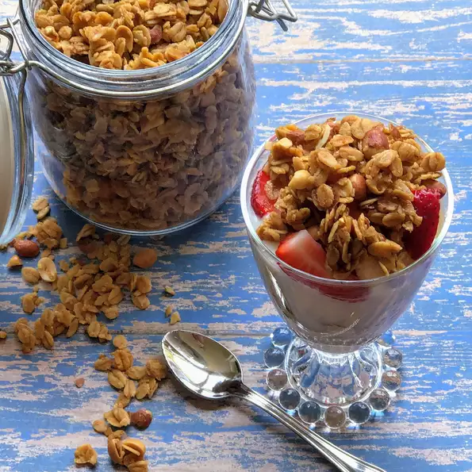

Honey Peanut granola

picture of the grand grand granola
This sweet, crunchy homemade granola combines quick oats with peanuts, wheat germ, honey, brown sugar, and vanilla. Baked in the oven, it's easy to make.
Ingredients
- 3 cups quick cooking oats
- ½ cup chopped peanuts
- ¼ cup wheat germ
- ⅓ cup honey
- ⅓ cup brown sugar
- ¼ cup vegetable oil
- 2 tablespoons warm water
- ½ teaspoon salt
- 1 teaspoon vanilla extract
Steps
- Preheat oven to 250 degrees F (120 degrees C). Lightly grease a baking sheet.
- In a large bowl, combine oats, peanuts, and wheat germ.
- In a separate bowl, combine honey, brown sugar, vegetable oil, water, salt, and vanilla.
Stir well; then pour into the oat mixture, and stir. Spread out on a cookie sheet.
- Bake for 1 hour, stirring every 15 minutes. Remove from oven, and cool before serving.